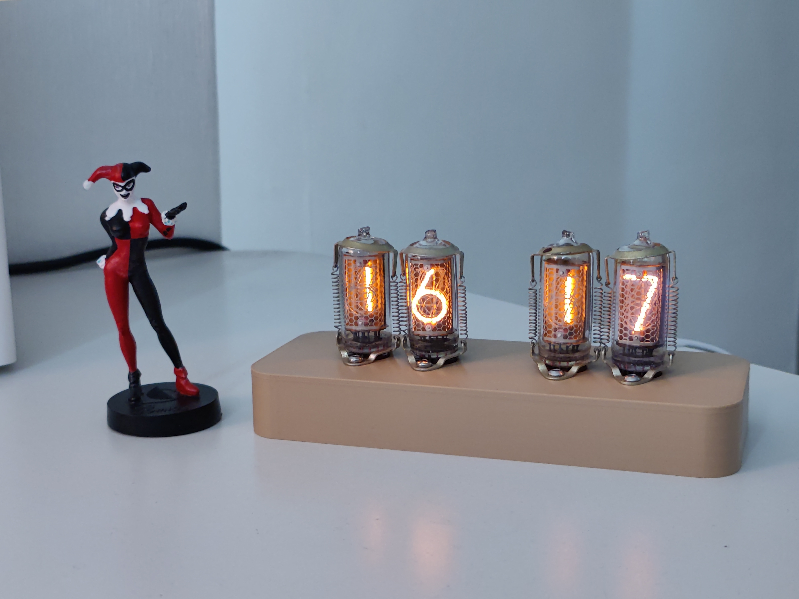

Самоучка-программист с ~12 годами опыта разработки коммерческих веб-приложений. Основной интерес — проектирование архитектуры систем и принятие технических решений на уровне сервисов и отдельных задач.
Основной стек: Elixir (4 года), Nix, Vue 3, ранее Ruby. Последние несколько лет активно изучаю Rust, интересуюсь системным программированием и архитектурой языков без сборщика мусора.
Люблю разбираться в устройстве систем и собирать их целиком — от архитектуры приложения до инфраструктуры и железа.
Express (корпоративный мессенджер) Команда ~11 инженеров. Разработка сервисов backend-инфраструктуры мессенджера.
B2B-платформа в сфере красоты для брендов и ритейлеров
Система управления графикой для крупных выставок
Реализовал распределенный поиск используя async_stream_nolink и pg_trgrm. Оптимизировал работу пуш сервиса прокачивающего 5 миллионов пушей в час: исправил ротацию соединений в адаптерах http2 для ios и android, добавил broadway и настроил рейт лимиты, которые помогли остановить тротлинг со стороны провайдеров во время лавин из сообщений.
Написал прогрессивное веб-приложение с использованием стека Vue, Vuex, Pug и SASS. Реализовал аутентификацию через Firebase Auth, интеграцию с REST API, а также кастомные компоненты для обрезки и обработки изображений.
Сократил время рендеринга дашборда за счёт внедрения materialized views PostgreSQL. Реализовал карту на базе Leaflet с кастомными плагинами: CRUD-операции через Fetch API, фильтрацию и печать.

NTP-часы с 40-летними индикаторными лампами ИН-12 на Rust. Печатная плата спроектирована в LibrePCB, корпус спроектирован в OpenSCAD и напечатан на Ender 3 Pro под управлением Klipper.
Приложение для трекинга привычек, которым пользуюсь ежедневно. Бекенд на Phoenix, фронтенд Vue 3, интеграция с Телеграмом через бот. Бекенд и фронтенд сразу разделены на разные репозитории.
NixOS хосты, на которых запущены в том числе числе Habits Tracker и система умного дома на ARM одноплатнике с zigbee. Управление секретами через agenix, декларативное описание дисков с disko, разворачивание на произвольном vps через nixos-anywhere.